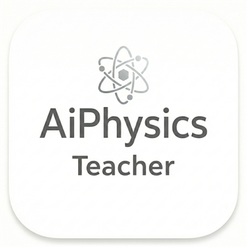

Education
學歷
- 彰師大物理系畢業
- 彰師大物理研究所畢業
- 台師大科教所博士生

MotionLab Tracker GuideAuthor Information
物理教育工作者，長期投入高中物理教學、探究與實作、科展與物理競賽指導。 MotionLab 專案希望把影片追蹤、資料視覺化與物理建模整理成更適合課堂使用的工具， 讓學生能從真實影像中理解運動、力學與三維軌跡資料。
Education
Teaching Experience
Mentoring
MotionLab Project
MotionLab 2D / 3D Tracker 是針對物理課堂、探究與實作、科展研究所設計的影片分析工具。 專案整合舊有 Tracker 資源、DLTdv8 相關概念與課堂操作需求，讓使用者能更快完成校正、 追蹤、圖表檢視、資料輸出與 3D 軌跡分析。
目前 2D 與 3D 可攜版已放在 GitHub Releases；開源資料與 source package 先維持未公開， 待正式整理後再釋出。
查看 MotionLab ReleasesResearch And Works